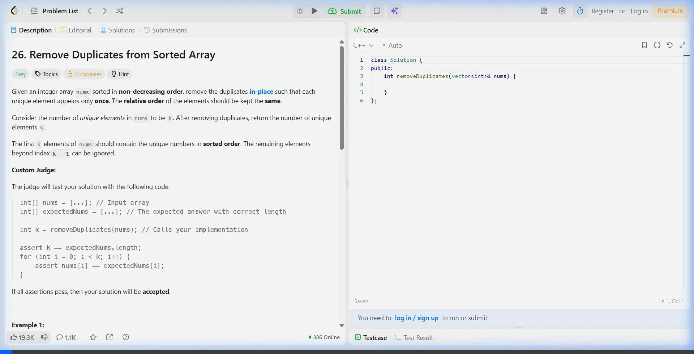

v1.0.0 Windows Build
#1 Algorithmic Diagnostic Assistant
noxar evaluates your active clipboard selection, performs complex asymptotic analysis, and serves edge-case diagnostics—all on a single keyboard shortcut.
leetcode_problem_solver.cpp
